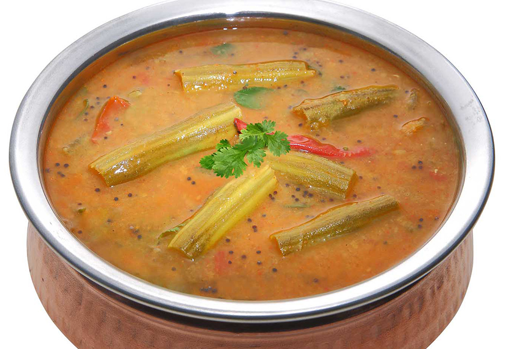

Sambar

Ingredients
1.Dhal
2.onion
3.tomato
4.tamarind
5.Veggies as you like
6.Aromatics
Now let’s get cooking!
Steps
1.Boil the dhal along with the veggies until cooked.
2.Add in the tamarind juice in the boiling mixture.
3.Add in the aromatics.
4.Finish it with a coriander garnish.